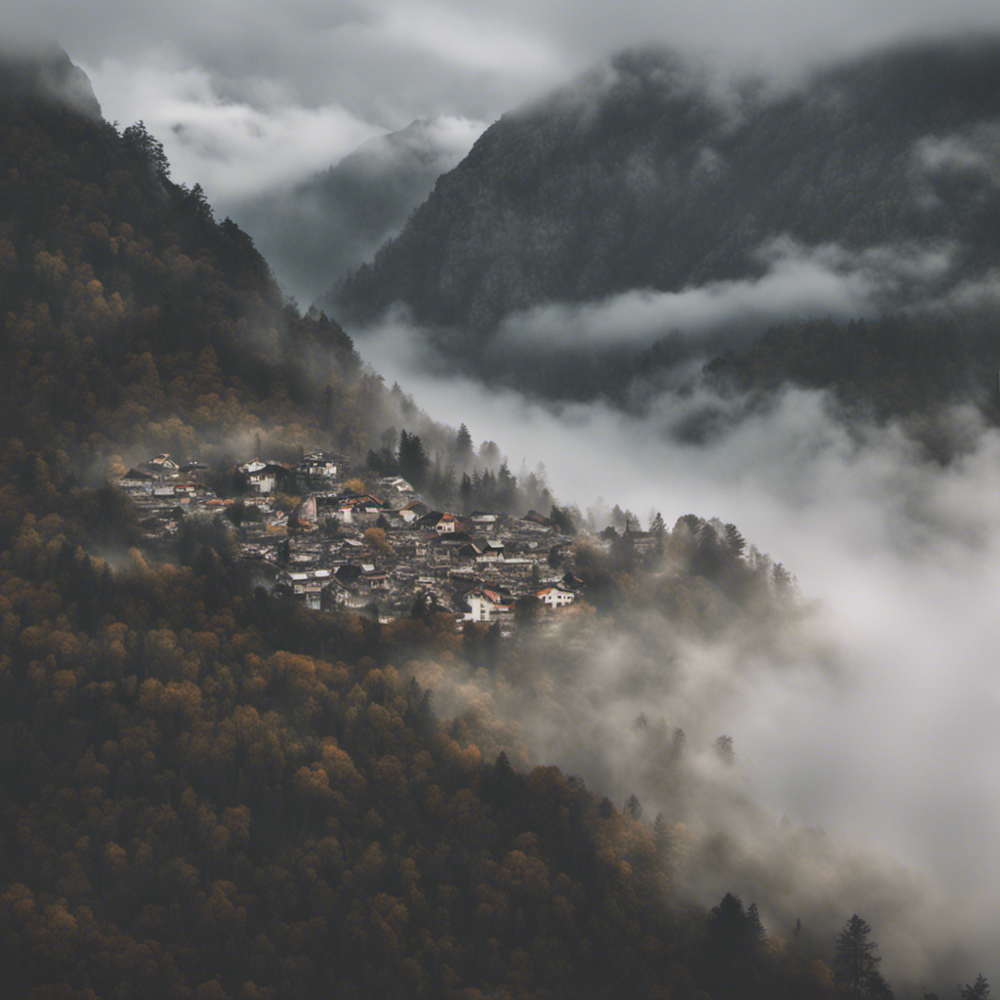
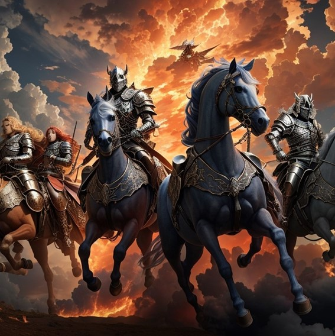

.png)
O Guardião do Portal
Havia um pequeno povoado aninhado entre montanhas coberta de neblina chamado Valebrisa. Seu silêncio e calmaria faziam dele um refúgio para aqueles que buscavam paz e tranquilidade. No entanto no centro dessa cidade, vivia um jovem chamado Daniel. Desde a infância, Daniel possuía um dom que o tornava diferente dos outros: ele via o que ninguém mais via. Isso o atormentava desde criança.
Pequeno e curioso, Daniel costumava contar tudo a sua mãe sobre “uma coisa invisíveis” que o atormentava e até mesmo o chamava pelo nome. Com o tempo, aprendeu a manter em segredo toda essa experiência vivida só por ele, mas as visões nunca o abandonaram. À medida que crescia, tornavam-se cada vez mais difícil para Daniel distinguir entre a realidade e o mundo deturpado de sua mente.
Quando mais velho, um dia, enquanto caminhava pela floresta que arrodeia a cidade, Daniel notou uma anciã que emitia uma “coisa boa” que Daniel não sabia disser o que era. Sentada em uma arvore caída. Seus olhos brilhantes e sábios pareciam enxergar sua alma. Era Dona Eliza, a guardiã do templo da cidade.
“Vejo que você tem um dom especial, meu jovem,” disse ela com um sorriso gentil.
Surpreso, Daniel perguntou: “Do que a senhora está falando?”
Dona Eliza respondeu: “Meus olhos enxergam mais do você imagina, assim como os seus. Você é especial, alguém com o dom de ver além do véu que separam nossos mundos.”
As palavras da anciã ecoaram na mente de Daniel. Pela primeira vez, alguém o entendia. Ele então passou horas conversando com Dona Eliza, querendo saciar a sede do desconhecido por ele, aprendendo sobre seu dom e como podia controlá-lo.
A partir desse dia, Daniel embarcou em uma jornada de autoconhecimento. Com a orientação de Dona Eliza, ele passou a treinar suas habilidades, aprendeu a interpretar suas visões e a se comunicar com aquelas forças que não podia explicar de onde viam. Conheceu outros que assim como ele podiam ver coisas que mais ninguém via.
Mas o caminho não era isento de desafios. Daniel enfrentou momentos de medo e incertezas enquanto explorava os limites de seu poder. No entanto, ele também descobriu a beleza do seu dom, onde podia “abrir um local de luz” uma luz que trazia com si, paz, e expulsavam todas aquelas sombras que o perseguiam desde que era apenas uma criança assustada.
À medida que sua compreensão e controle cresceram, Daniel percebeu que seu dom não era apenas uma maldição, mas também uma benção. Ele passou a usar suas habilidades para iluminas os cantos mais sombrios da cidade.

No entanto, um dia em que Daniel andava sobre a nevoa da floresta em busca do autoconhecimento, uma sombra sinistra começou a se manifestar em sua visão, uma sombra que o seguia a anos, ameaçando não apenas sua sanidade, mas também a segurança da Valebrisa, aquela sombra a cada segundo ela ficava mais forte e mais opressora. Daniel ao ver tamanho poder que ali se manifestava se aproxima de seus companheiros que conheceu da através de Dona Eliza que se unem para enfrentar essa ameaça. Eles enfrentam o desconhecido com coragem, provando que sua força era maior. Daniel invoca aquela luz e o poder de seus dons superam até mesmo as trevas mais profundas que já sentiu em toda sua vida, envolvendo todo aquele mal para dentro da luz. Assim Daniel descobre o que pode fazer com seus poderes.
Dai em diante Daniel segue sua vida a procura do mal, envolvendo então todo caos que cruzava seu caminho em sua poderosa força misteriosa e dizimando assim toda opressão para nunca mais se deparar com elas. E assim foi por mais de 16 anos. Daniel já teria seu nome dito por todo canto como o guerreiro que enfrenta o mal que oprime a humanidade.
Com certa idade, já maduro e sábio, ao voltar para sua antiga vila Daniel cai ao chão, de joelhos, sente todo o caos volta à tona, Daniel não sabe dizer oque está acontecendo, é uma força extraordinariamente possessiva, algo assustador até mesmo para Daniel. Ao olhar para o céu Daniel se depara com nuvens que parecem estar em chamas, sons vindos de lá como trombetas que ecoavam um som ensurdecedor, junto ao som aquela força só aumentava. Des que pode ver um clarão tal qual a luz que emanava de seus poderes, Daniel pode ver algo saindo de dentro da luz, algo com curvas humanas, Daniel podia ver claramente alguém vir em sua direção, se arrastando como se pedisse ajuda, ao se aproximar esse ser toca seu ombro e como um filme tudo passa em sua mente caótica. Daniel pôde ver tudo o que aquele ser queria te dizer, como uma lembrança Daniel pode ver que aquele ser não era de seu mundo.
Como se fossem lembranças sua, Daniel entende que toda sua vida foi um tremendo engano, que seu poder na verdade era uma porta para um reino divino, rodeado de paz e harmonia onde os seres que eram arrebatados do nosso mundo e que tivessem o merecimento de ir para esse plano eram bem-vindos. Daniel pode ver que ao usar seus poderes nessas entidades ele na verdade os mandavam para esse plano onde eles viviam a eternidade, o tempo nesse mundo perfeito era diferente, lá era como se o tempo parasse, para o Daniel foram anos, já nesse mundo Daniel mandou 7 bestas aladas que montavam em monstros quase que em instantes, essas bestas tinham poderes que dizimou todo aquele reino.
Ao entender todo o caos que Daniel proporcionou aquele mundo perfeito, em choque sem se mexer, Daniel se volta o olhar aquelas nuvens vermelhas e pode ver aqueles monstros que agora faziam partes de suas lembranças descendo ao chão muito mais poderosas e agora podiam ser vistas a olhos nu.
